In this project, you will create an Azure IoT Hub, connect IoT DevKit to it, and collect the temperature and humidity data from sensors and send the data to the IoT hub.
What you learn
- How to create an IoT Hub and register a device for MXChip IoT DevKit.
- How to collect sensor data by running a sample application on MXChip IoT DevKit.
- How to send the sensor data to your IoT hub.
What you need
Finish the Getting Started Guide to:
- Have your IoT evKit connected to Wi-Fi
- Prepare the development environment
An active Azure subscription. If you do not have one, you can register via one of the methods:
- Activate a free 30-day trial Microsoft Azure account
- Claim your Azure credit if you are MSDN or Visual Studio subscriber
Use Visual Studio Code
Visual Studio Code is the primary development tool for IoT DevKit. If this is the first time you learn about Visual Studio Code, there are a series of Getting Started tutorials are dedicated for it.
Step 1. Open the project folder
A. Start VS Code
Make sure your IoT DevKit is not connected. Start VS Code first and connect the IoT DevKit to your computer. VS Code automatically finds the IoT DevKit and opens an introduction page:
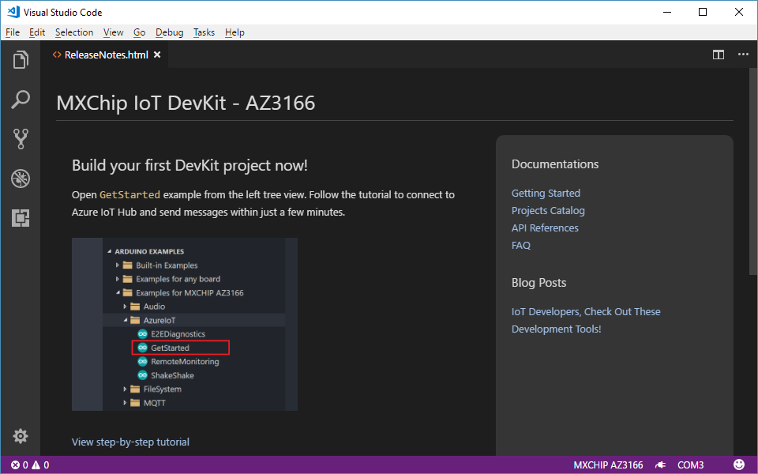
Notice: Occasionally, when you launch VS Code, you are prompted with error that cannot find Arduino IDE or related board package. Close VS Code, launch Arduino IDE once again, and VS Code should locate Arduino IDE path correctly.
B. Open the Arduino Examples folder
Expand left side ARDUINO EXAMPLES section, browse to Examples for MXCHIP AZ3166 > AzureIoT, and select GetStarted. This will open a new VS Code window with project folder in it.
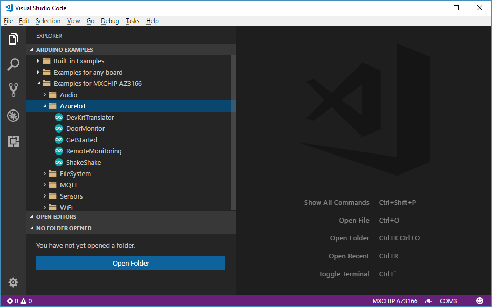
If you happen to close the pane, you can reopen it. Use Ctrl+Shift+P (macOS: Cmd+Shift+P) to open the command palette, type Arduino, and then find and select Arduino: Examples.
Step 2. Provision Azure services
-
In the solution window, run your task through
Ctrl+P(macOS:Cmd+P) by enteringtask cloud-provision: In the VS Code terminal, an interactive command line guides you through provisioning the required Azure services: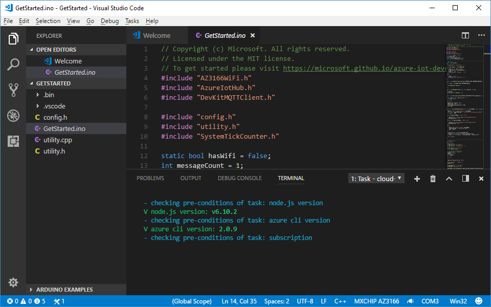
Notice: If the page hangs in the loading status when trying to sign in to Azure, please check this FAQ steps to solve it.
-
When a list of Azure subscriptions display in the terminal, use the up and down arrow keys to select the Azure subscription that you will use to provision the Azure IoT Hub. Then press Enter to confirm the selected subscription.
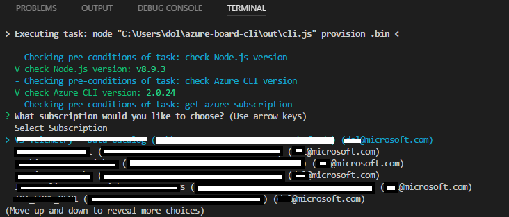
-
Provision IoT Hub
-
If you’ve provisioned IoT Hub(s) before, a list of IoT Hubs associated with the subscription appears in the terminal. Please use up and down arrow keys to select one from the list and press Enter to confirm.
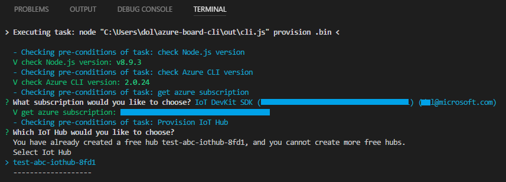
Select existing Free IoT Hub
Wait several minutes to finish ARM Template deployment and IoT Hub Device provision. Then press any key to exit the terminal.
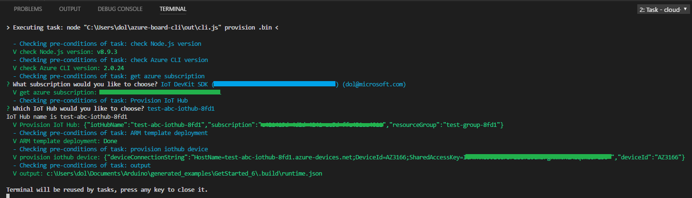
Finish selecting IoT Hub
-
If you don’t have any IoT Hub, please follow the steps to create a free IoT Hub:
-
Resource group provision: Use up and down arrow keys to choose a resource group you’ve created before or select Create New… to provision a new resource group. Complete the resource group provision according to the command line prompt.
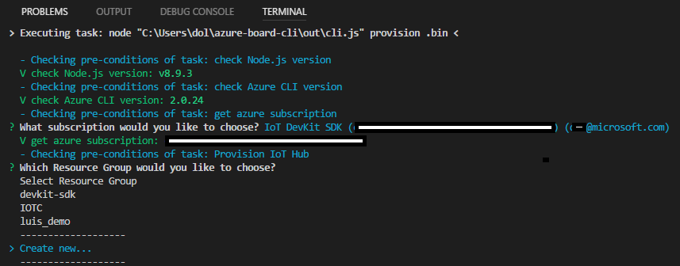
If you choose to create a new resource group:
-
Use up and down arrow keys to select region for a new resource group provision, and then press Enter to confirm.
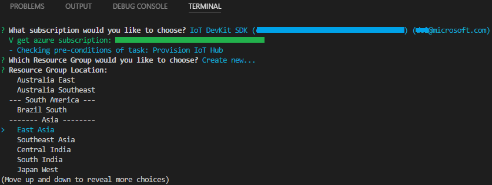
Select region for resource group provision
-
Input a name for new resource group.
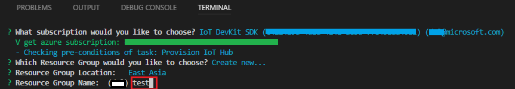
Input a name for resource group provision
-
-
IoT Hub provision:
Enter a name for your new IoT Hub, and press Enter to confirm.
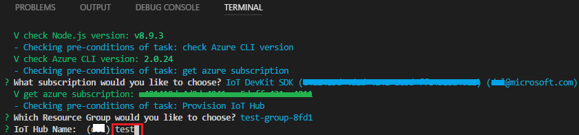
Input a name for IoT Hub provision
Wait several minutes to finish ARM Template deployment and IoT Hub Device provision. Then press any key to exit the terminal.
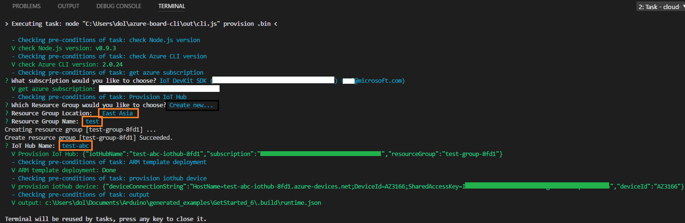
Finish cloud provision
-
-
Step 3. Build and upload Arduino sketch
Windows
-
Use
Ctrl+Pto runtask config-device-connection. -
The terminal will ask you whether you want to use connection string that retrieves from
task cloud-provisionstep. You could also input your own device connection string by clicking ‘Create New…’ -
The terminal prompts you to enter configuration mode. To do so, hold down button A, then push and release the reset button. The screen displays the DevKit id and ‘Configuration’.
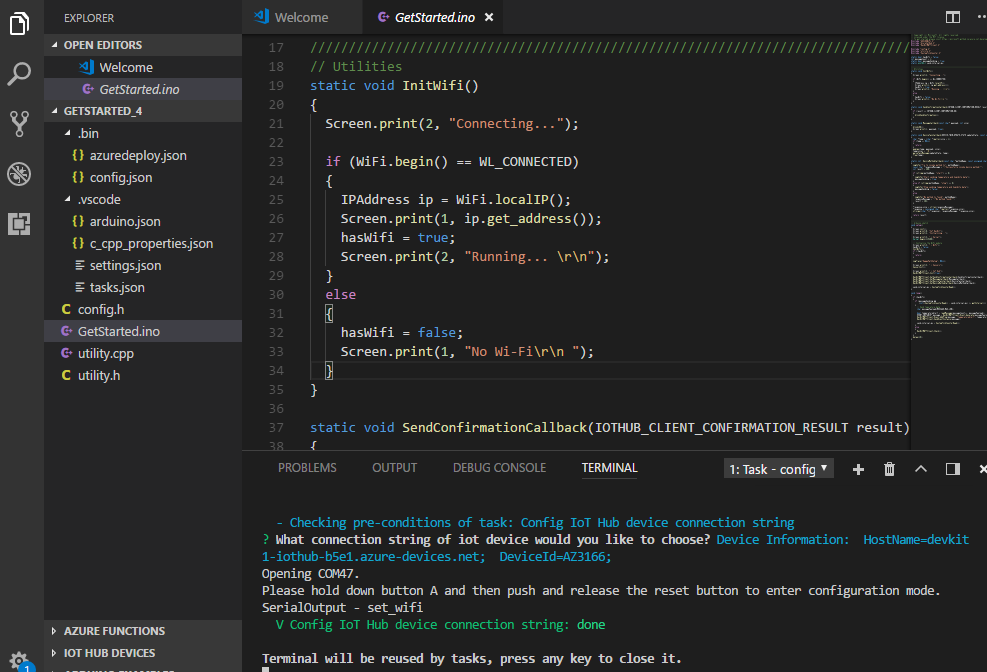
-
After
task config-device-connectionfinished, clickF1to load VS Code commands and selectArduino: Upload, then VS Code starts verifying and uploading the Arduino sketch: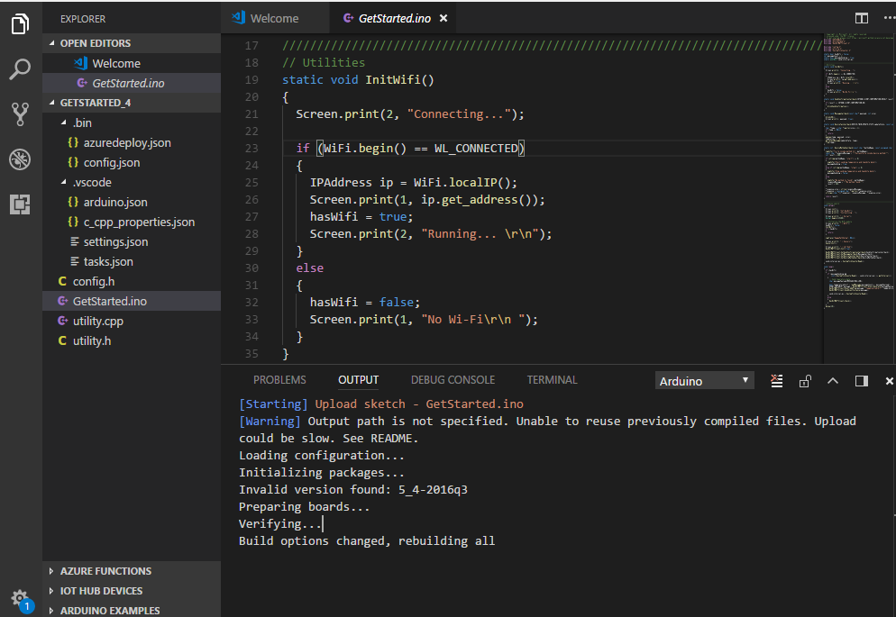
The DevKit reboots and starts running the code.
Notice: Occasionally, you get error “Error: AZ3166: Unknown package”. This is due to the board package index is not refreshed. Check this FAQ steps to solve it.
macOS
-
Put DevKit into configuration mode: Hold down button A, then push and release the reset button. The screen displays ‘Configuration’.
-
Use
Cmd+Pto runtask config-device-connection. -
The terminal will ask you whether you want to use connection string that retrieves from
task cloud-provisionstep. You could also input your own device connection string by clicking ‘Create New…’ -
After
task config-device-connectionfinished, clickCmd + shift + pto load VS Code commands and selectArduino: Upload, then VS Code starts verifying and uploading the Arduino sketch:
The DevKit reboots and starts running the code.
Notice: Occasionally, you get error “Error: AZ3166: Unknown package”. This is due to the board package index is not refreshed. Check this FAQ steps to solve it.
Test the project
In VS Code, following these steps to open and set up the Serial Monitor:
-
Click the COM[X] on the status bar to set the right COM port with STMicroelectronics:
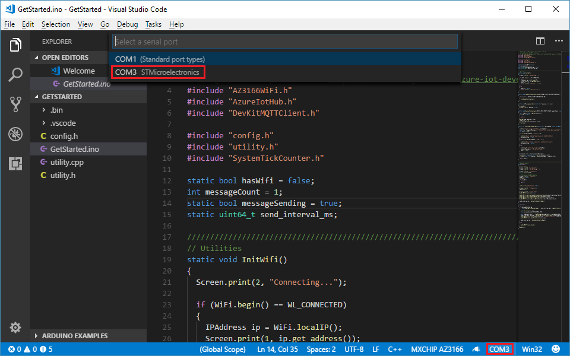
-
Click power plug icon on the status bar to open the Serial Monitor:
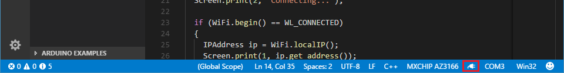
The sample application is running successfully when you see the following results:
- The Serial Monitor displays the same information as the content in the screenshot below.
- The LED on MXChip IoT DevKit is blinking.
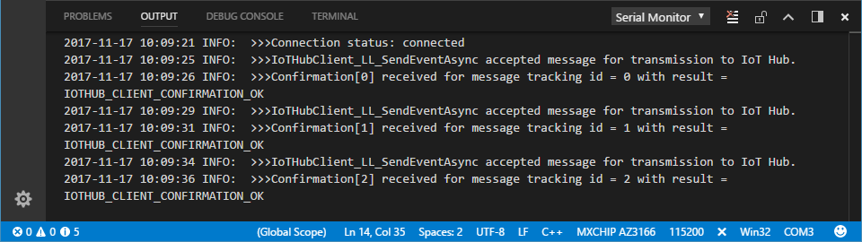
Check data in IoT Hub
In VS Code, you can use Azure IoT Toolkit to monitor device to cloud (D2C) messages in IoT Hub.
-
Log in Azure portal.
-
Find the IoT Hub you just created.
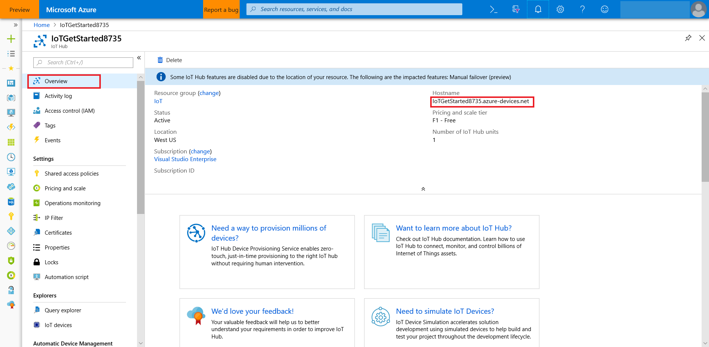
-
In the Shared access policies pane, click the iothubowner policy, and note down the Connection string of your IoT hub.

-
In VS Code, click the Extensions icon in the Activity Bar:
-
Search for Azure IoT Toolkit and install it.
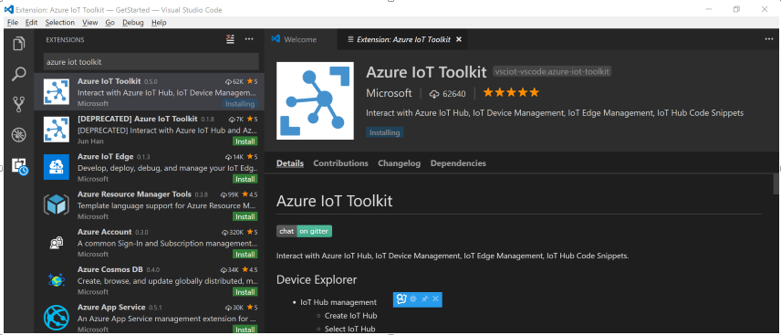
-
Expand IoT Hub Devices on the bottom left corner.
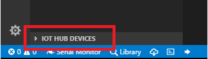
-
Click Set IoT Hub Connection String in context menu.
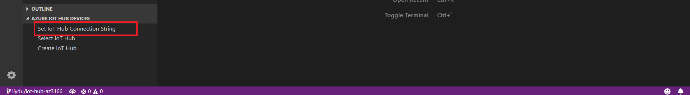
-
Click IoT: Start monitoring D2C message in context menu.
-
In OUTPUT pane, you can see the incoming D2C messages to IoT Hub.
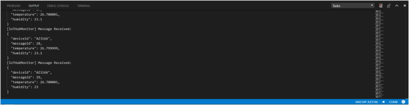
Problems and feedback
If you encounter problems, you can find FAQs if you encounter problems or reach out to us from the channels below.
Was this documentation helpful?
Next steps
You have successfully connected an MXChip IoT DevKit to your IoT hub, and you have sent the captured sensor data to your IoT hub.
To continue getting started with Azure IoT Hub and to explore other IoT scenarios, see:
- Manage cloud device messaging with iothub-explorer
- Save IoT Hub messages to Azure data storage
- Use Power BI to visualize real-time sensor data from Azure IoT Hub
- Use Web Apps to visualize real-time sensor data from Azure IoT Hub
- Weather forecast using the sensor data from your IoT hub in Azure Machine Learning
- Device management with iothub-explorer
- Remote monitoring and notifications with Logic Apps